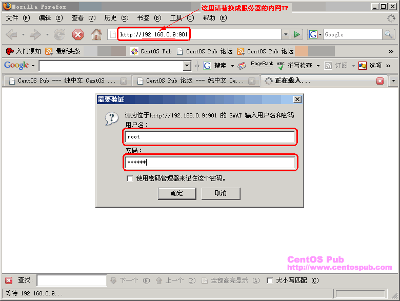
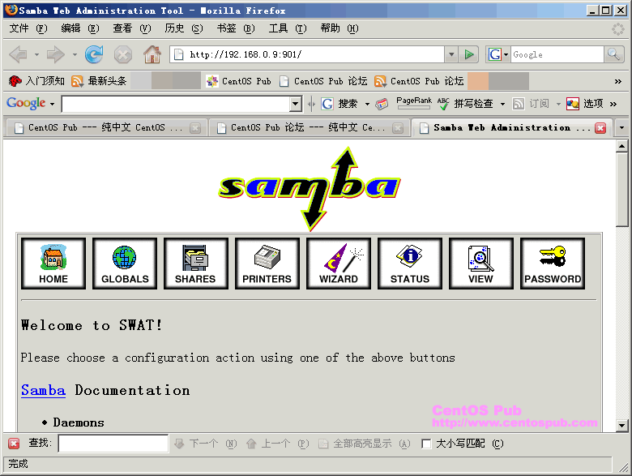

<<< 返回［配置详解］索引
< 用 SWAT 让 Samba 服务器的管理温和化 > （最近更新日：2007/01/29）
SWAT 是通过浏览器对 Samba 进行管理的工具之一。通过 SWAT ，可以在 Samba 允许访问范围内的客户端，用浏览器对服务端的 Samba 进行控制。在线文档的阅览、smb.conf 的确认和编辑，以及密码的变更、服务的重启等等都可以通过 SWAT 来完成，它的直观让 Samba 变得温和化，对那些不喜欢文本界面管理服务器的朋友来说，是一个强大的工具。
首先，通过 yum 在线安装 SWAT 。
[root@sample ~]# yum -y install samba-swat ← 在线安装 SWAT
Setting up Install Process
Setting up repositories
update 100% |=========================| 951 B 00:00
base 100% |=========================| 1.1 kB 00:00
addons 100% |=========================| 951 B 00:00
extras 100% |=========================| 1.1 kB 00:00
Reading repository metadata in from local files
primary.xml.gz 100% |=========================| 74 kB 00:00
update : ################################################## 214/214
Added 2 new packages, deleted 0 old in 0.99 seconds
Parsing package install arguments
Resolving Dependencies
--> Populating transaction set with selected packages. Please wait.
---> Downloading header for samba-swat to pack into transaction set.
samba-swat-3.0.10-1.4E.9. 100% |=========================| 87 kB 00:00
---> Package samba-swat.i386 0:3.0.10-1.4E.9 set to be updated
--> Running transaction check
Dependencies Resolved
=============================================================================
Package Arch Version Repository Size
=============================================================================
Installing:
samba-swat i386 3.0.10-1.4E.9 base 6.5 M
Transaction Summary
=============================================================================
Install 1 Package(s)
Update 0 Package(s)
Remove 0 Package(s)
Total download size: 6.5 M
Downloading Packages:
(1/1): samba-swat-3.0.10- 100% |=========================| 6.5 MB 00:20
Running Transaction Test
Finished Transaction Test
Transaction Test Succeeded
Running Transaction
Installing: samba-swat ######################### [1/1]
Installed: samba-swat.i386 0:3.0.10-1.4E.9
Complete!
|
然后编辑 /etc/xinetd.d/swat ，对其进行配置。本文的原则是只允许内网以及本地的客户端对 SWAT 进行访问。
[root@sample ~]# vi /etc/xinetd.d/swat ← 编辑 SWAT 的配置文件
only_from = 127.0.0.1 ← 找到此行，在下面添加如下行：
only_from = 192.168.0.0 ← 添加此行，只允许内网范围对 SWAT 进行访问
disable = yes ← 找到此行，将 yes 改为 no
disable = no ← 变为此状态 |
在启动 SWAT 之前，先将防火墙中 SWAT 使用的 901 号端口开放。
[root@sample ~]# vi /etc/sysconfig/iptables ← 编辑防火墙规则
-A RH-Firewall-1-INPUT -m state --state NEW -m tcp -p tcp --dport 445 -j ACCEPT ← 找到此行，在下面添加如下行：
-A RH-Firewall-1-INPUT -m state --state NEW -m tcp -p tcp --dport 901 -j ACCEPT ← 添加此行开放SWAT的901端口
[root@sample ~]# /etc/rc.d/init.d/iptables restart ← 重新启动防火墙，使新的规则生效
Flushing firewall rules: [ OK ]
Setting chains to policy ACCEPT: filter [ OK ]
Unloading iptables modules: [ OK ]
Applying iptables firewall rules: [ OK ] |
由于 SWAT 的启动是通过超级服务器，所以只要重新启动 xinetd 即可启动 SWAT 。
[root@sample ~]# /etc/rc.d/init.d/xinetd restart ← 重新启动超级服务器，启动 SWAT
Stopping xinetd: [ OK ]
Starting xinetd: [ OK ] |
在服务端启动 SWAT
后，我们就可以通过 SWAT 允许范围（本文以内网192.168.0.0及本地127.0.0.1为例）
内的客户机的浏览器中，通过 http://服务器的内网IP:901 来访问服务端的
SWAT 了。如下所示：
1、在浏览器中输入“http://服务器的内网IP:901”（本文以笔者测试环境的“http://192.168.0.9:901”为例。请各自替换为您的服务器内网IP地址。），然后输入 root 用户的用户名及密码进入 SWAT 的管理首页；

2、确认出现如下 SWAT 管理中心的首页：

通过 SWAT 管理 Samba 与直接修改 smb.conf 的方式，在本质上并无差异，但通过浏览器访问的方式，可以使 Samba 的管理更加温和化，更加适用于不擅长使用文本界面、直接修改配置文件的朋友。